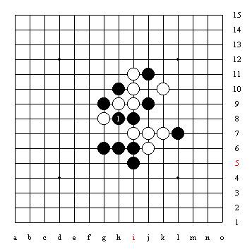

中级难度，白棋连续进攻胜
#1 中级难度，白棋连续进攻胜 作者：江南新绿 发表时间：2006-12-15 13:58:01
#2 Re:中级难度，白棋连续进攻胜 作者：yuelee 发表时间：2006-12-21 15:09:39
好题~支持下！#3 Re:中级难度，白棋连续进攻胜 作者：110q 发表时间：2006-12-26 22:58:15
要是做成互动棋谱就好了，目算比较难。#4 Re:中级难度，白棋连续进攻胜 作者：无尘 发表时间：2007-1-28 18:52:27
最后在H7抓禁..
#5 Re:中级难度，白棋连续进攻胜 作者：无尘 发表时间：2007-1-28 18:57:05
黑的防点不一样,最后抓禁点也不一样..#6 Re:中级难度，白棋连续进攻胜 作者：落叶冰凌 发表时间：2007-2-25 14:41:25
看看的说#7 Re:中级难度，白棋连续进攻胜 作者：洪松大将军 发表时间：2007-2-26 13:06:45

#8 Re:中级难度，白棋连续进攻胜 作者：杨华明 发表时间：2007-2-26 20:42:13
看看#9 Re:中级难度，白棋连续进攻胜 作者：413223 发表时间：2007-2-27 18:49:33
没算明白
#10 Re:中级难度，白棋连续进攻胜 作者：gerbo 发表时间：2007-3-9 17:03:02

看不懂\`越看越黑大优~~神啊~~贴个解吧~~
#11 Re:中级难度，白棋连续进攻胜 作者：lilied 发表时间：2007-3-26 10:55:37
555555555做不出来#12 Re:中级难度，白棋连续进攻胜 作者：汪洋孤舟 发表时间：2008-5-10 23:26:59
说句实在话，真的看不懂诶！#13 Re:中级难度，白棋连续进攻胜 作者：雅匪 发表时间：2008-5-11 21:06:00
#14 Re:中级难度，白棋连续进攻胜 作者：雅匪 发表时间：2008-5-23 22:59:31
两年了
还没有公布答案
啊
#15 Re:中级难度，白棋连续进攻胜 作者：逆刃 发表时间：2008-5-23 23:33:42
无聊的我贴个答案吧，不知道对不对。发现错误的指正啊！
以下白棋连续进攻，黑棋的防守均为唯一的防守点，黑棋防其它处均速败。不考虑黑棋无用的所有的冲四。白棋28手最后在K4（见下图，其实和原图一样，只是坐标显示不同）做杀后必胜！
#16 Re:中级难度，白棋连续进攻胜 作者：雅匪 发表时间：2008-5-24 2:32:32

#17 Re:中级难度，白棋连续进攻胜 作者：雅匪 发表时间：2008-5-26 20:08:43
哦,上次看15楼的图看不见是个红叉这次却看见了,和我的开头一样啊#18 Re:中级难度，白棋连续进攻胜 作者：雅匪 发表时间：2008-5-29 1:11:15
就没参考我地
#19 Re:Re:中级难度，白棋连续进攻胜 作者：耕虞 发表时间：2008-7-12 14:26:04
38手要先防住 占h7
=======上图对应的爱五子棋谱代码如下，以便你拆解：========
h8i9i8g8g9i7j9k10h10h9g6i10j11i11h6j7i6j6i5k7l7k9k11j10l8l10m10j8m11k6k8l6m5m6n6j4j5k5h7f5k4l3i3
======================================================引用：
原文由 Ryan 发表于 2008-5-26 22:09:15 :
=======上图对应的爱五子棋谱代码如下，以便你拆解：========
h8i9i8g8g9i7j9k10h10h9g6i10j11i11h6j7i6j6i5k7l7k9k11j10l8l10m10j8m11k6k8l6m5m6n6j4j5k5i3l4m3k4
======================================================